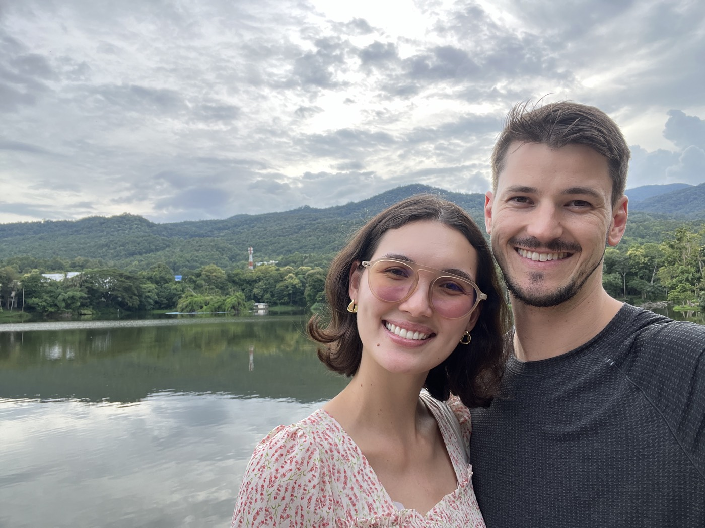
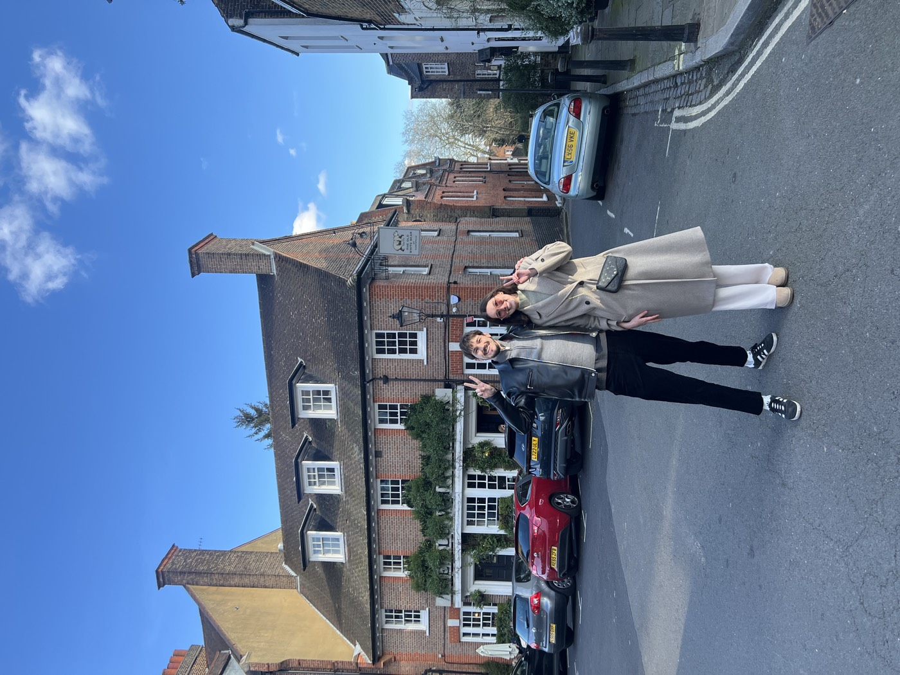
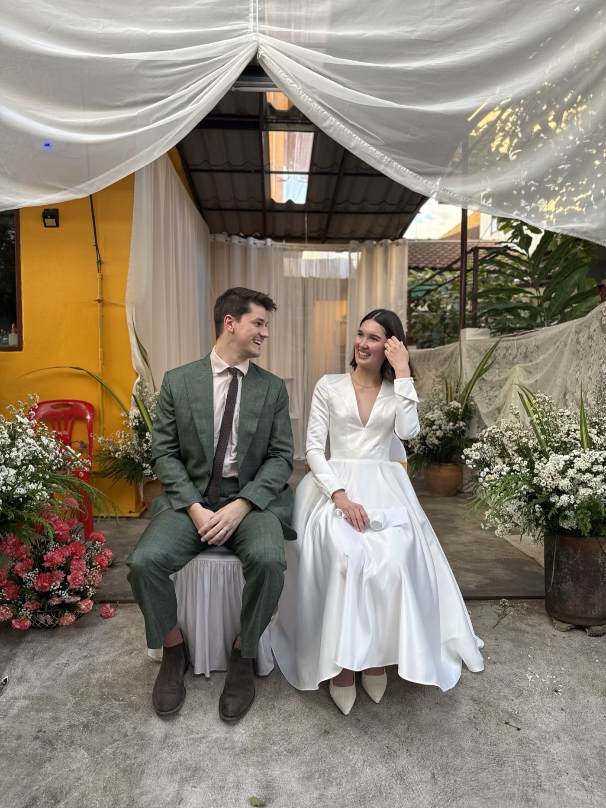

Hello, person I care about. I hope you are well.
I didn't get around to doing one of these last year, so here's what I've been up to for the past two years.
February 2024. I broke my collarbone snowboarding. Got surgery. Advice from a pro bone breaker: take your physiotherapy seriously.
June 2024. I left my job, left Singapore, and moved to Chiang Mai, Thailand to live with my at-the-time girlfriend (spoiler alert).
I started Furnis, my first attempt at founding my own business. Very fun to build! Totally underestimated how difficult marketing would be. I hung it up after 6 months.

I proposed to my girlfriend, Esther, and she said yes, despite my unemployment status at the time. That was pretty cool of her.
After some persuasion, I got her to agree to move to America with me. Hooray, let's apply for a visa! That was October 2024.
Then I got a job at a very cool startup. But they wanted me to be in not-Asia, and we couldn't be in America until Esther's visa came through. So we moved to Europe.
Poland, January 2025. Despite below-freezing temperatures and the sun deciding to leave at 3:30 in the afternoon, it is a lovely country. Warsaw is very cozy, safe, clean, easy to get around, has excellent restaurants, and almost everyone speaks English. Go visit.
London, 4 months. What a city. Some highlights: Royal Albert Hall, Westminster Abbey, Electric Cinema in Notting Hill, Lewis Leathers, Hampstead in general, and Chicken Shop.

Barcelona. Which I cannot recommend as strongly as the last times I was there in 2023, 2022, and 2013.
Summer trips. Tuscany, Italy and Alaçati, Turkey. Both I recommend, but not in July.
At this point it's month 9 of waiting on Esther's visa. We desperately want somewhere to call home.
We finally received a letter from U.S. Citizenship and Immigration Services that they would like to begin processing our visa. Yippee.
We flew back to Thailand in preparation for Esther's interview at the U.S. embassy in Bangkok. Many, many, many papers were prepared.
The day of the interview finally comes: November 4th, 12 months after we applied. She was approved in about 5 minutes. They didn't even look at 90% of her prepared paperwork, much to Esther's dismay.
3,164 days after first arriving in Asia, I moved back to America. Perhaps permanently.
Since then we've been (re)adjusting to the strange customs and practices of Americans, and planning our new life in this beautiful country.
November 2025. We got married in Esther's hometown, my favorite town, and the town in which we met: Chiang Mai, Thailand.

Then we got married again at my parents' house.
Shoutout to her parents and my parents for putting these ceremonies together.
I hope 2026 brings you that thing you want more than anything. Or, if you want for nothing, continued peace and happiness.